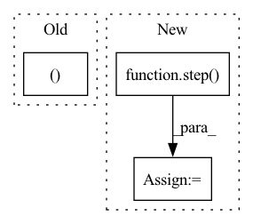

Pattern ID :1636
Before Change
def body_ctx(ctx: Context, src: jnp.ndarray) -> typing.Union[typing.Tuple[jnp.ndarray, jnp.ndarray], jnp.ndarray]:
src = input_embed(ctx, src)
zero = jnp.zeros_like(src)
src = (ctx.parameters, src, zero, src, zero )
for i in range(ctx.dims.depth):
src = reversible(ctx, pointwise_block, src)
src = reversible(ctx, bottleneck_block, src)After Change
ctx.parameters = step(ctx)(src, ({}, 0))
ctx.add_depth = False
else:
src, _ = step( ctx) (src, ({}, 0))
out = revnet_out(src)
out = scale_norm_act(ctx, out, ctx.dims.features, act=False)
wgt = get_param(ctx, "out_embd", [ctx.dims.features, ctx.dims.vocab], std=1,In pattern: SUPERPATTERN
Frequency: 3
Non-data size: 3
Instances Fragment ID: 7748166
Project Name: homebrewnlp/homebrewnlp-jax
Commit Name: 457dca1ca35d447a12a1e2ede9ac2e19b93c20a1
Time: 2022-08-28
Author: 39779310+ClashLuke@users.noreply.github.com
File Name: src/model/main.py
M Class Name: AnonimousClass
N Class Name: AnonimousClass
M Method Name: body_ctx(2)
N Method Name: body_ctx(2)
M Parent Class:
N Parent Class:
M File Name: src/model/main.py
N File Name: src/model/main.py
M Start Line: 27
M End Line: 36
N Start Line: 55
N End Line: 64
Before Change
@jax.jit
def inference(self):
hx = self.lstm.initial_state(1)
x = jnp.zeros((1After Change
return logits, hx
for i in range(1, total_len):
logits, hx = step( x, hx)
if i >= len(prompt):
x = jnp.argmax(logits, axis=-1)
else:
x = jnp.array([prompt[i]], dtype=jnp.int32) Fragment ID: 7748156
Project Name: ntt123/pax
Commit Name: cfbafb39e4817e115614c2dd70b0fa2507e81924
Time: 2021-08-28
Author: ntt123@earth
File Name: examples/char_rnn.py
M Class Name: LM
N Class Name: LM
M Method Name: inference(3)
N Method Name: inference(1)
M Parent Class: pax.Module
N Parent Class: pax.Module
M File Name: examples/char_rnn.py
N File Name: examples/char_rnn.py
M Start Line: 31
M End Line: 40
N Start Line: 78
N End Line: 102
Before Change
def training_step(self, batch, batch_idx):
(x0, x1), _, _ = batch
x0, x1 = self.resnet_byol(x0, x1)
loss = self.criterion(x0, x1)
self.log("train_loss_ssl", loss)
return lossAfter Change
return x0_, x1_
p0, z1 = step(x0, x1)
p1, z0 = step( x1, x0)
loss = self.criterion((z0, p0), (z1, p1))
self.log("train_loss_ssl", loss)
return loss Fragment ID: 7748168
Project Name: lightly-ai/lightly
Commit Name: 57ec16a13adf32fd74551079a3a0a5f4e969ae4f
Time: 2021-09-27
Author: igor_7779@hotmail.com
File Name: docs/source/getting_started/benchmarks/imagenette_benchmark.py
M Class Name: BYOLModel
N Class Name: BYOLModel
M Method Name: training_step(3)
N Method Name: training_step(3)
M Parent Class: BenchmarkModule
N Parent Class: BenchmarkModule
M File Name: docs/source/getting_started/benchmarks/imagenette_benchmark.py
N File Name: docs/source/getting_started/benchmarks/imagenette_benchmark.py
M Start Line: 431
M End Line: 432
N Start Line: 469
N End Line: 484